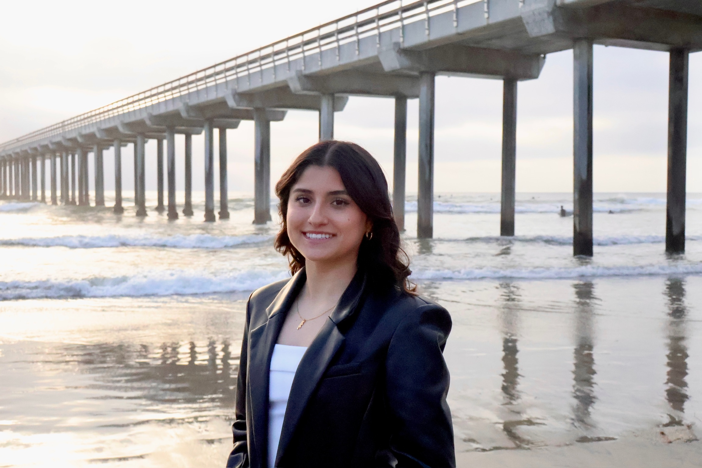
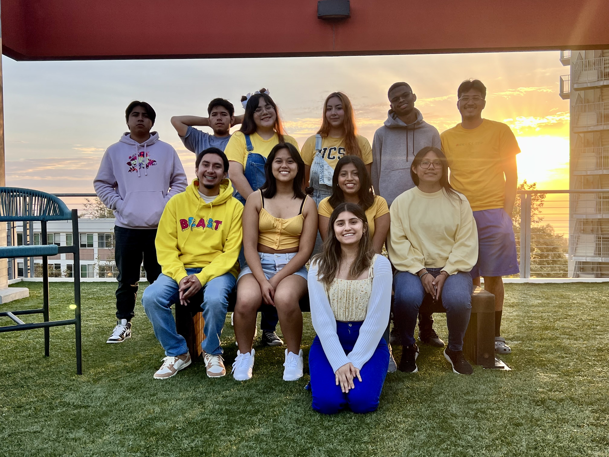
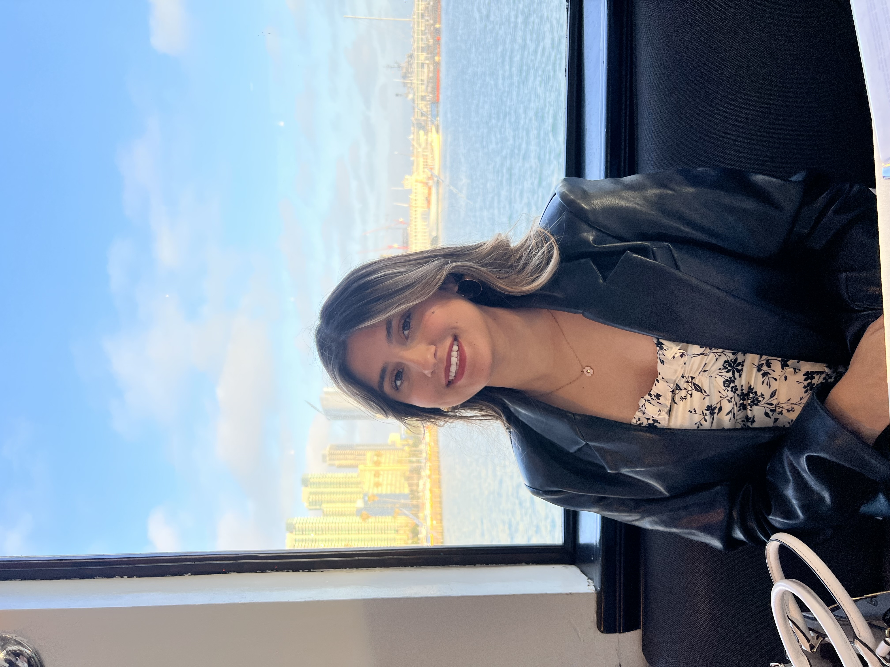
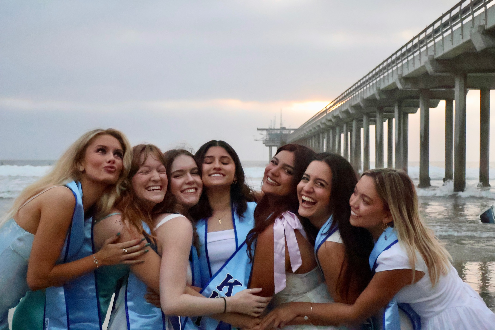
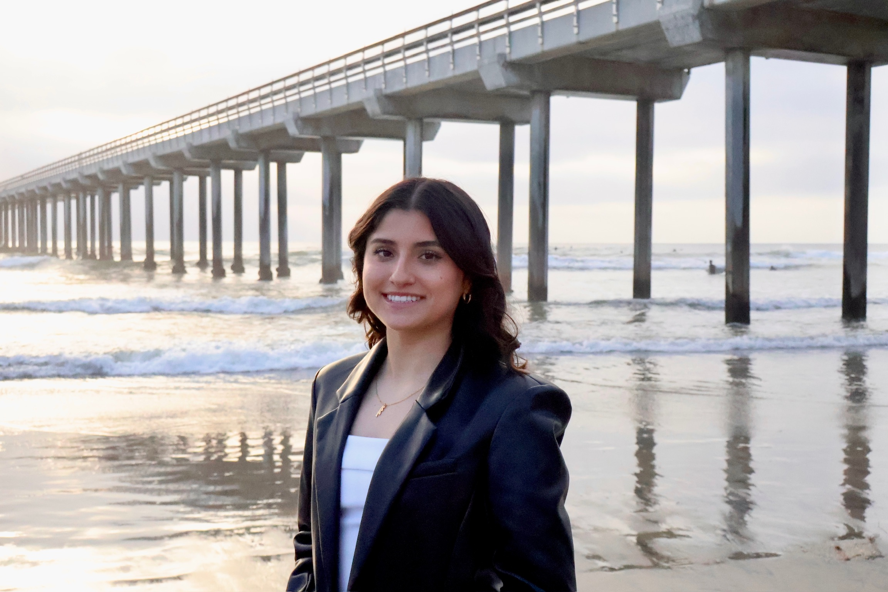
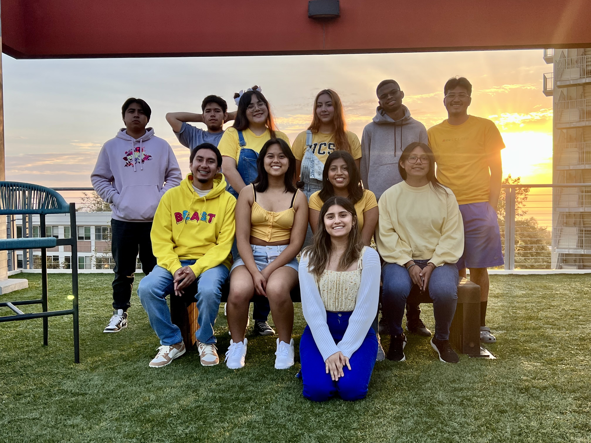
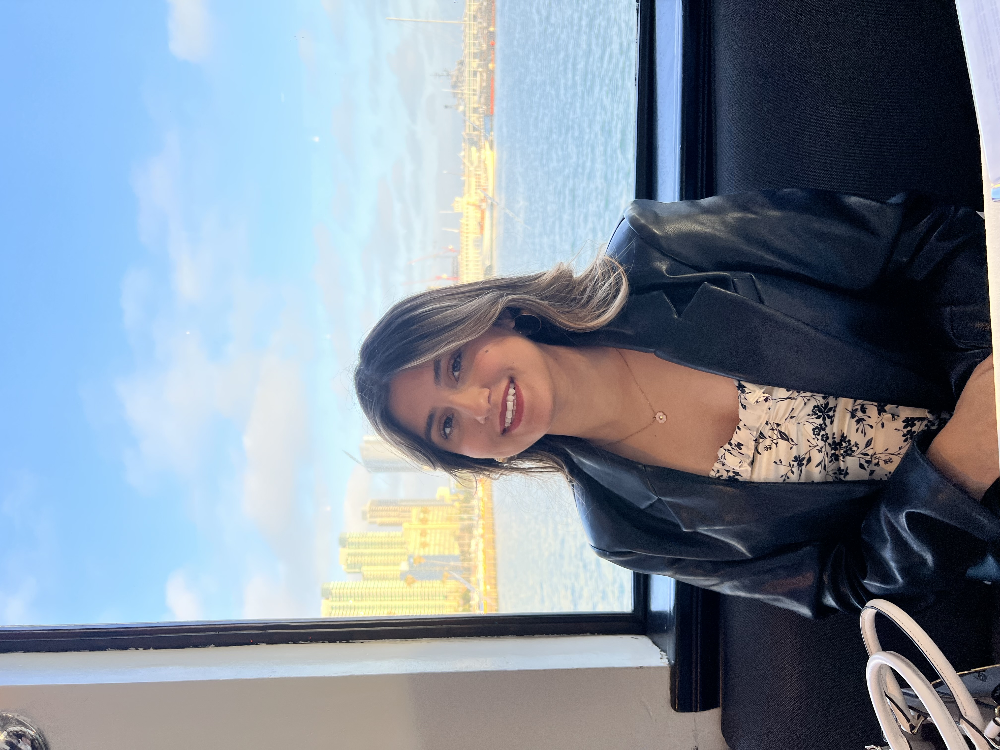
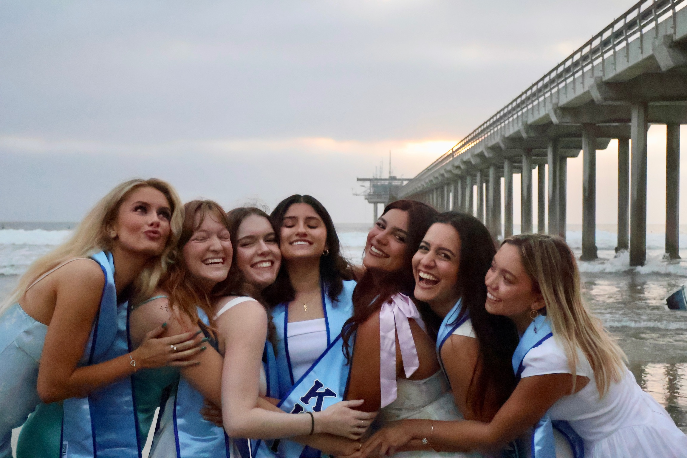

Get to Know Me
 







Hi, I'm Melissa, a dedicated Software Engineer passionate about innovation and mentorship. My tech journey began with my first CS course at UCSD, which sparked my desire to create impactful solutions.
I've had the honor of mentoring first-year college students during the summer bridge program, focusing on diversity, equity, and inclusion (DEI) and career success. This experience deepened my commitment to fostering supportive environments.
My involvement with Kappa Kappa Gamma taught me valuable lessons in sisterhood and personal growth, shaping my approach to collaboration and leadership.
I'm also passionate about early coding education. I teach kids how to code at The Coder School, hoping to inspire them as I wish I had been inspired at a younger age. My role in Girls Who Code has further enhanced my skills and allowed me to support young women in tech.
Outside of coding, I enjoy exploring new technologies, engaging with the tech community, and working on personal projects. I'm always excited to collaborate and create amazing things!
My Hobbies
Meet My Cats